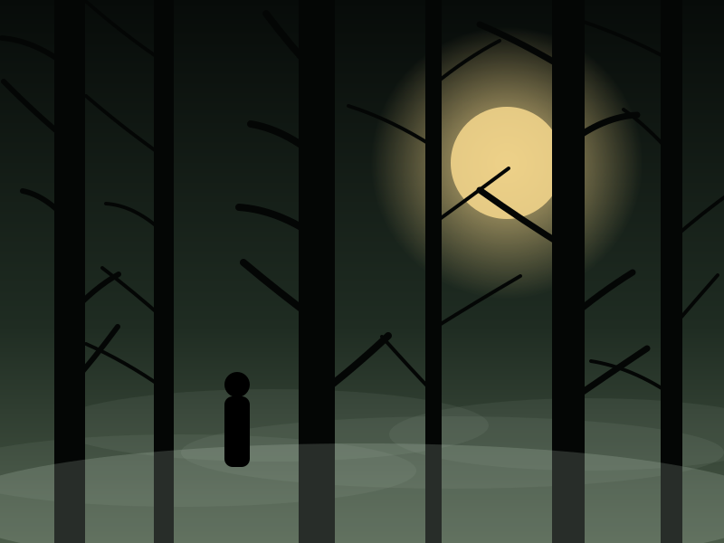
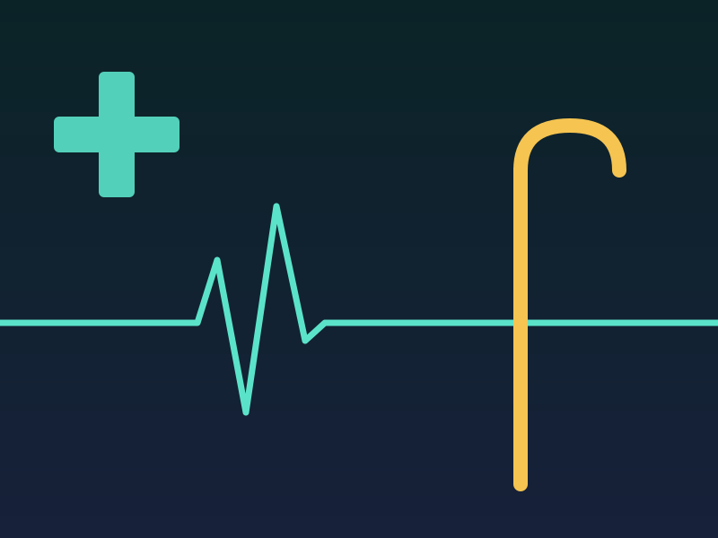
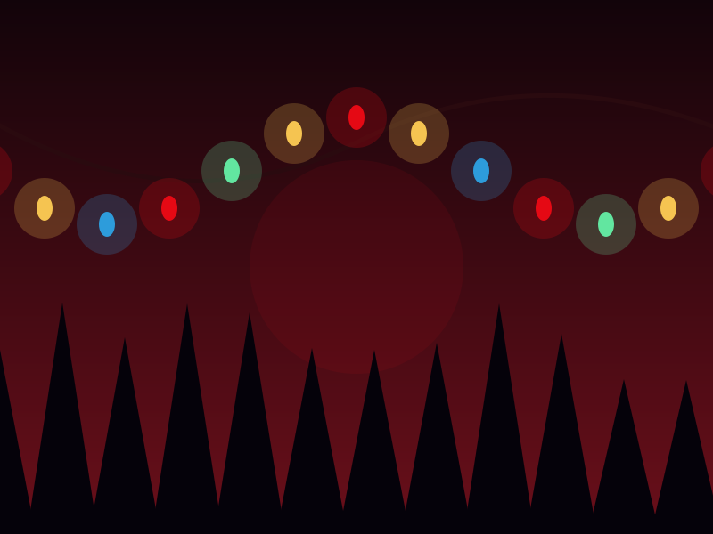
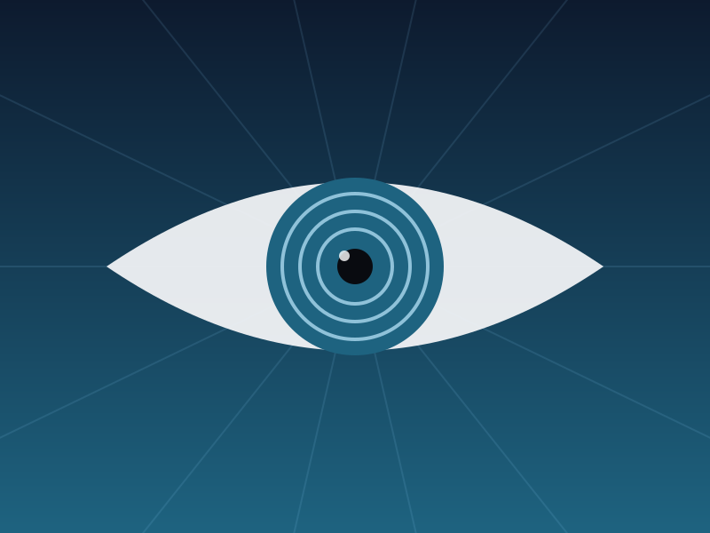

★ 9.5Во все тяжкие
★ 9.5Во все тяжкиеВо все тяжкие
Учитель химии начинает производить запрещённые вещества и постепенно меняет свою жизнь.
Подробнее →Десять лучших американских сериалов с рейтингом IMDb. У каждого есть отдельная страница с описанием.
Отсортированы по рейтингу IMDb
★ 9.5Во все тяжкиеУчитель химии начинает производить запрещённые вещества и постепенно меняет свою жизнь.
Подробнее → ★ 9.2Игра престолов
★ 9.2Игра престоловБорьба знатных домов за Железный трон на фоне древней угрозы, которая просыпается на севере.
Подробнее → ★ 8.9Лучше звоните Солу
★ 8.9Лучше звоните Солу
★ 8.9Настоящий детективКаждый сезон — отдельное расследование и новые герои, которые сталкиваются со своим прошлым.
Подробнее → ★ 8.9Друзья
★ 8.9Друзья ★ 8.9Офис
★ 8.9Офис
★ 8.7Доктор ХаусГениальный и язвительный диагност со своей командой разгадывает самые загадочные случаи.
Подробнее →
★ 8.6Очень странные делаВ городке 1980-х пропадает мальчик, и друзья сталкиваются с тайной параллельного мира.
Подробнее →
★ 8.2МенталистКонсультант полиции раскрывает преступления с помощью наблюдательности и психологии.
Подробнее → ★ 8.1Теория большого взрыва
★ 8.1Теория большого взрыва| # | Сериал | Жанр | Годы | IMDb |
|---|---|---|---|---|
| 1 | Во все тяжкие | Криминальная драма | 2008–2013 | ★ 9.5 |
| 2 | Игра престолов | Фэнтези · Драма | 2011–2019 | ★ 9.2 |
| 3 | Лучше звоните Солу | Криминальная драма | 2015–2022 | ★ 8.9 |
| 4 | Настоящий детектив | Криминальная драма · Антология | 2014– | ★ 8.9 |
| 5 | Друзья | Ситком | 1994–2004 | ★ 8.9 |
| 6 | Офис | Ситком · Мокьюментари | 2005–2013 | ★ 8.9 |
| 7 | Доктор Хаус | Медицинская драма | 2004–2012 | ★ 8.7 |
| 8 | Очень странные дела | Фантастика · Хоррор | 2016–2025 | ★ 8.6 |
| 9 | Менталист | Детектив · Криминальная драма | 2008–2015 | ★ 8.2 |
| 10 | Теория большого взрыва | Ситком | 2007–2019 | ★ 8.1 |
Оценки округлены и со временем могут немного меняться.